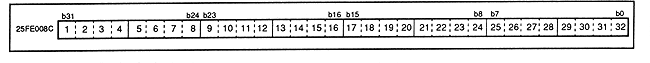

Return to previous page ｜ Return to menu ｜ Go to next page
-
■ DSP data RAM data port
- Figure 3.17 shows the details of DSP data RAM data port. Data RAM data is accessed from this port. When accessed, the data RAM address of the DSP data RAM address port is incremented by one. However, access is prohibited during program execution (when the program execution control flag is 1). This port can be imported and exported.
Figure 3.17 DSP data RAM data port (register: PDD) Initial value undefined

Return to previous page ｜ Return to menu ｜ Go to next page